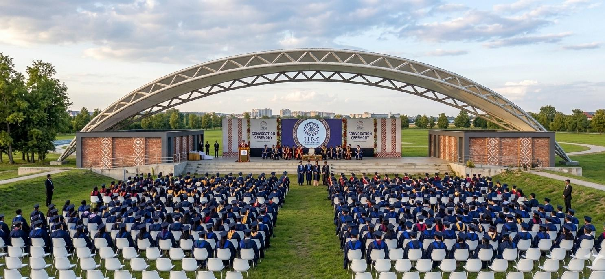

Find your way.
Feel at home.
Explore IIM Sambalpur, find campus destinations, and choose the route that works for you.

Getting around, made simple.
Spanning over 200 acres, the permanent IIM Sambalpur campus brings together academic halls, student residences, library suites, and sports facilities.
Choose how you travel
Walk, bicycle, or drive with routes tailored to each mode. Automobiles are restricted to arterial roads to preserve peaceful walking paths.
Find a clear route
Paved walkways, milestone landmarks, and step-free access ensure comfortable journeys between hostels, dining, and classrooms.
Navigate with confidence
Clear milestone cues provide visual orientation even when satellite GPS is degraded inside multi-storey residential and academic complexes.
Ready to find your destination?
Select any building, hostel, or gate on campus to see distance, estimated walking or driving times, and turn-by-turn directions.